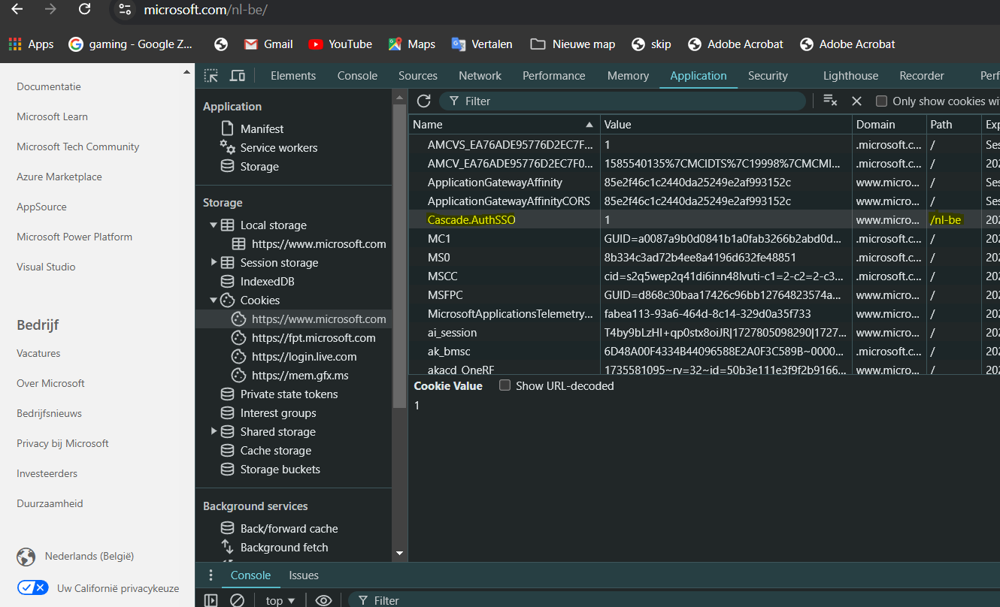
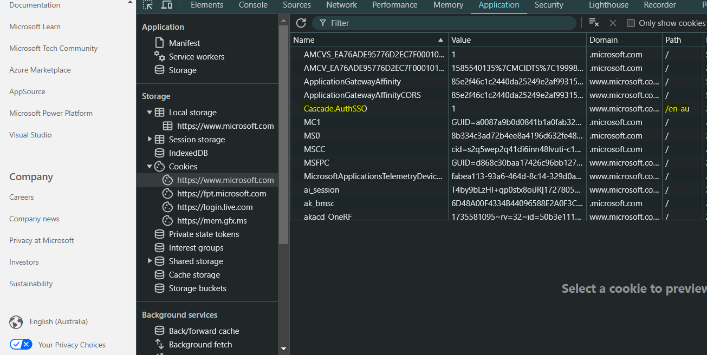

Wanneer je de regio of taalinstelling op de website van Microsoft aanpast, wordt deze informatie opgeslagen in de cookies. Je kunt dit zien door de Chrome Developer Tools te openen en onder de Application tab de opgeslagen data te bekijken. Wanneer je de taal of regio wijzigt, zal er een cookie worden aangepast of toegevoegd waarin deze instelling wordt bijgehouden.
Naast de taal- en regio-informatie worden er mogelijk ook andere gegevens opgeslagen in cookies, zoals sessie-informatie en marketingdata van Microsoft of derden.
 